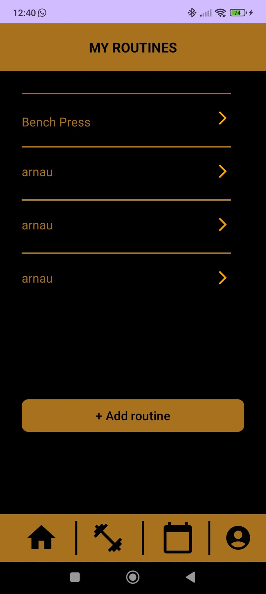
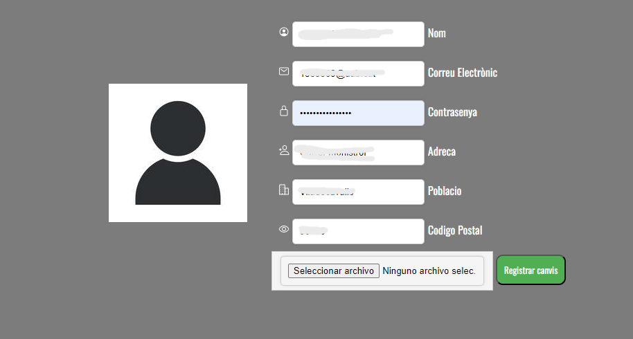

Este proyecto nació de la mano de una asignatura de la mencion de Software llamada Laborratorio de Software. En esta asignatura, debemos desarrollar un software propuesto por un compañero de clase en grupos de desarrollo de 8 personas. Estos grupos son organizados por el profesor segun nuestras habilidades. En nuestro caso, el proyecto elegido fue una aplicación para Android desarrollada en Java haciendo uso de Android Studio. Esta aplicación se centraba en el registro de rutinas y ejercicios para anotar los ejercicios hechos en nuestras sesiones de gimnasio, Además, disponemos de un apartado de red social, donde ver las rutinas y ejercicios de otros usuarios, y poder utilizarlas.
En esta imagen podemos ver un ejemplo en pruebas sobre las rutinas guardadas. Este desarrollo duró aproximadamente 6/7 semanas, en el que dividimos los roles segun nuestros puntos fuertes. En mi caso, quedé englobado dentro del equipo de Frontend en primera instancia, aunque en nuestras etapas finales, y con tal de llegar a los objetivos mas altos acordados con el profesor, desempeñe las funciones de FullStack Developer.
Aqui tenemos la pagina de Login de nuestra aplicación. Para este servicio, utilizamos una API proporcionada por Firebase, para automatizar además la opcion de recuperación de contraseña. En un principio contamos también con una base de datos que alojaría la universidad, pero finalmente no pudimos obtenerla. Por tanto, tuvimos que buscar soluciones alternativas.
Aqui es donde entré yo como FullStack. Y es que además de hacer desarrollo BackEnd dentro de la aplicación, configuré la base de datos de nuestro proyecto.
Dispongo de una Raspberry Pi 3B+, y en resumidas cuentas me encargue de instalar una base de datos local (MariaDB) con un gestor de Bases de Datos (PHPMyAdmin), la cual era gestionada por una API REST creada por mis compañeros
que se ejecutaba mediante SpringBoot.
Después, utilizamos DuckDNS con tal de tener un dominio estatico mediante el que acceder via internet a la Raspberry.
Finalmente, logramos realizar el guardado de rutinas, ejercicios y la gestión de la red social con este pequeño servidor.
El resultado final fue mas que satisfactorio, y nuestros profesores quedaron satisfechos con el rendimiento del equipo. Esta experiencia me ayudó a trabajar en un entorno lo más cercano a producción, gestionados utilizando una metodologia SCRUM. Teniamos unos plazos bien marcados, unos retos a nivel de conocimiento, además de saber trabajar con un equipo, coordinarnos y llegar a dar un producto que, si bien no era completamente funcional, podría bien ser una version pre-release de algo mucho mas grande.
En este caso, se nos propuso desarrollar un software que simularía un sistema de control de puertas de un edificio.
En este sistema, tenemos unos usuarios con unas credenciales que pueden acceder al sistema dependiendo de una fecha y hora.
Además, dentro de las operaciones básicas de abrir, cerrar, bloquear y desbloquear; podemos abrir momentaneamente una puerta durante cierto tiempo (Unlock Shortly).
El objetivo de esta aplicación era aplicar patrones de diseño que el profesor iba proponiendo, y para la segunda parte realizamos un FrontEnd mas elaborado haciendo uso de Dart.
El desarrollo nos llevo a cabo aproximadamente 2 meses.
En este proyecto correspondiente a una asignatura de tercero llamada "Tecnologias de Desarrollo para Internet i Web", nos propusieron como practica hacer una web de un e-commerce ficticio.
Como tecnologias a utilizar, utilizamos HTML/CSS para dar forma a la web, además de incorporar llamadas PHP utilizando el modelo Vista-Controlador para recuperar la información de una base de datos que nos proporcionaron. Hicimos tanto llamadas asincronas con fetch como con AJAX. A la derecha podemos ver una imagen de la pantalla de Modificar Datos de Usuario
En la segunda parte tuvimos que implementar una variable SESSION con tal de almacenar todos los datos del carrito, además de guardar una vez hacemos la compra toda la información en la Base de Datos. A la izquierda se puede ver un ejemplo de un pedido realizado a modo de prueba.